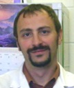

{% include head.html %}
{% include menu.html %}
{% include footer.html %}s-Demi; font-weight:bold; font-weight:bold; "> Anna Katsman, M.D. Office: New College Building, 14th Fl., 245 N 15th Street, Philadelphia, PA 19102
Phone:215-762-8475 Fax:215-762-3150 bio | research: chitosan scaffolds, bone regeneration |contact
Daniel Park, M.D. Office: New College Building, 14th Fl., 245 N 15th Street, Philadelphia, PA 19102 Phone:215-762-8475 Fax:215-762-3150 bio | research: liver tissue engineering| contact

Piotr Krecioch, M.D. Surgical Resident Fellow Office: New College Building, 14th Fl., 245 N 15th Street, Philadelphia, PA 19102 Phone:215-762-8475 Fax:215-762-3150 bio | research: LCL grafts, vascular tissue | contact Qingwei Zhang, Ph.D. Office: New College Building, 14th Fl., 245 N 15th Street, Philadelphia, PA 19102 Phone:734-223-1462 Fax:215-762-3150 bio | research : biomaterials, tissue engineering | contact | posters
Yah-el Har-el, Ph.D. Office: New College Building, 14th Fl., 245 N 15th Street, Philadelphia, PA 19102 Phone:215-762-1983 Fax:215-762-3150 bio | research : cardiac patch | contact